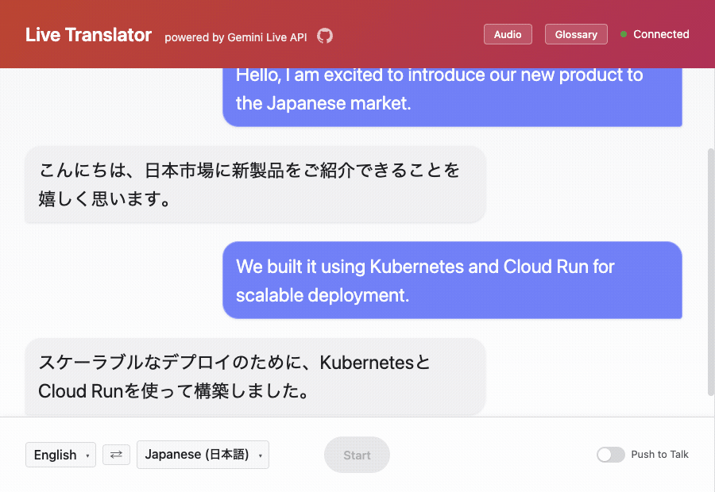

Kaz Sato (佐藤 一憲)
Kaz Sato, a Staff Developer Advocate from the Cloud AI team, has authored over 25 ML/AI blogs and demos for Google Cloud's official blog. His work has garnered attention from Jeff Dean and Eric Schmidt, and been featured in Newsweek and The New Yorker. He's a regular speaker at Google I/O and Cloud Next, and has presented internationally in 17 countries. Kaz also shares ML/AI updates with his 23,000+ X followers.
Google Cloud AIチームのデベロッパーアドボケイトとしてGoogle Cloud USブログ記事やドキュメントの執筆、デモ開発等を担当。2016年より25件以上を掲載し、ジェフディーン、エリックシュミット、ニューズウィーク誌、ニューヨーカー誌により紹介された。延べ17か国のイベントで講演し、Google I/OやCloud Nextにも例年登壇。Xでは23,000フォロワーに向けてAI/MLの情報を日々共有している。
2026 Creations, Publications & Demos
Focusing on AI Agents, Vertex AI Vector Search 2.0, Gemini Live API, and Hardware Synthesis.

Live Translator (Gemini Live API)
Experience real-time low-latency voice translation in action. Direct speech-to-speech with simultaneous live transcription across 97+ languages over WebSockets.

LensMosaic: 1M Items Search in Milliseconds
Search across roughly 1 million items from a Mercari product dataset in milliseconds. Built with ADK Gemini Live API Toolkit, Vertex AI Vector Search 2, and Gemini Embedding 2.
Hotel Concierge: Gemini Grounding Demo
Intelligent multimodal hotel concierge combining Gemini models with live Google Search, Google Maps, and Vertex AI Vector Search 2.0 grounding for zero-hallucination travel advice.

Give your app search superpowers: Agent Retrieval (Vector Search 2.0)
Explores how Vertex AI Vector Search 2.0 revolutionizes Agent Retrieval with auto-embeddings, self-tuning ANN indexes, and native hybrid search for real-time agent reasoning.
Building a Real-Time Audio Translator with Gemini Live API
Architectural deep-dive on building Live Translator across 97 languages. Explains direct speech-to-speech audio streaming over WebSockets, continuous session pre-opening, and automated soak testing.

10-Minute Agentic RAG with the New Vector Search 2.0 and ADK
Transition from simple retrieve-then-generate pipelines to dynamic Agentic RAG. Step-by-step tutorial configuring auto-embeddings, Reciprocal Rank Fusion hybrid retrieval, and ADK tool calls.

XLS32 — 32-Voice Polyphonic HLS/FPGA Synthesizer
Built in Google XLS (DSLX) on a Digilent Basys 3 board, developed end-to-end with autonomous AI coding agents and verified headlessly over USB. A breakthrough hardware synthesis project.
Era of Agents (EOA) Workshop: Rush Hour
Build with Gemini World Tour workshop: vibe-build a transit-crisis ADK agent on Gemini Enterprise Agent Platform using Antigravity. Covers the complete lifecycle: Build → Scale → Govern → Optimize → Engage.

End-to-End Travel Agent: Vector Search 2.0 + ADK
Co-authored with Eran Lewis. Complete runnable walkthrough building a smart concierge that combines Gemini models, ADK agent loop, and Vector Search 2.0 hybrid filters on Airbnb listings.
2026 Keynotes & Speaking Events
International conference appearances and technical keynotes in 2026
Google Cloud Technical Series
Singapore
Google Cloud Next '26
Las Vegas, USA
Google Cloud Next '26
Tokyo, Japan